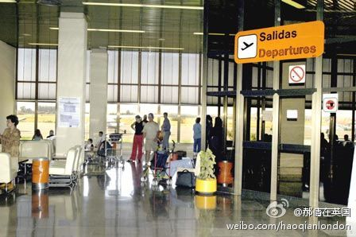

我一直奇怪RyanAir怎么赚钱？ //@zigwei:明明是都转成廉航了。。。BCN, ALC, ALG这都是ryan的 base，还新增了vueling这家iberia的全资子公司。。。 //@斯图亚特9:都坐高鉄是进步 //@yadaa9:很多欧洲国家真的难以为继 去走走看就知道了 无论低端高端就业 这些国家都被边缘化了@郝倩在欧洲:【西班牙计划部分关闭30家机场】西班牙东部的卡斯特利翁机场去年3月份正式运营，现在只有一家飞机在此降落；韦斯卡机场去年一年迎来2781名乘客；巴达霍斯机场上一部商业客机的降落还是在1月份。机场太多客人太少，西班牙政府计划部分关闭47家国有机场中的30家，以缩减开支。（郝倩） 
都坐高鉄是进步 //@yadaa9:很多欧洲国家真的难以为继 去走走看就知道了 无论低端高端就业 这些国家都被边缘化了@郝倩在欧洲:【西班牙计划部分关闭30家机场】西班牙东部的卡斯特利翁机场去年3月份正式运营，现在只有一家飞机在此降落；韦斯卡机场去年一年迎来2781名乘客；巴达霍斯机场上一部商业客机的降落还是在1月份。机场太多客人太少，西班牙政府计划部分关闭47家国有机场中的30家，以缩减开支。（郝倩）